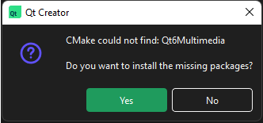

Edit CMake configuration files
To open a CMakeLists.txt file for editing, right-click it in the Projects view and select Open With > CMake Editor.
You can also use the cmo filter in the locator to open the CMakeLists.txt file for the current run configuration in the editor. This is the same build target as when you go to Build and select Build for Run Configuration.
The following features are supported:
- Selecting F2 when the cursor is on a:
- Filename - to open the file
- CMake function, macro, option, target, CMake's Find or Include module, local variable created by
setorlist, or package - to go to that item
- Keyword completion
- Code completion for local functions and variables, cache variables,
ENV, targets, packages, and variables thatfind_packageadds - Pre-defined code snippets for setting CMake print properties and variables, as well as creating Qt console and GUI applications and sample Find modules
- Path completion
- Auto-indentation
- Matching parentheses and quotes
Warnings and errors are displayed in Issues.
Install missing Qt packages
If you add a Qt module in find_package that you did not install, Qt Creator asks whether you want to install it with Qt Online Installer.

Select Yes to install the package with Qt Online Installer.
See also How To: Build with CMake, CMake, Completion, and Snippets.